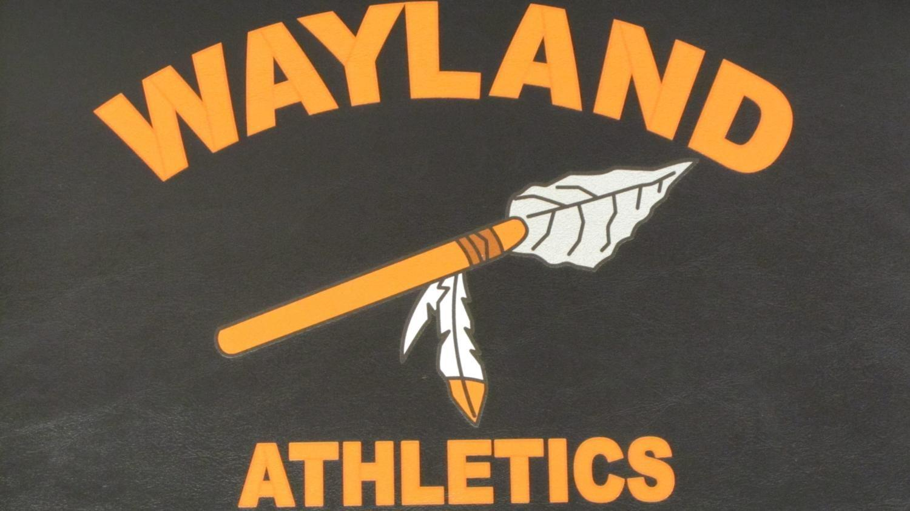

Boston University | Boston, MA
Expected May 2024
- Bachelor’s Degree in Computer Science
- Club Involvement:
- First Baseman for BU Club Baseball
- CGS Events Committee Director
- Outing Club

Wayland High School | Wayland, MA
August 2016 - May 2020
- Club Involvement:
- E-Board on Mentors in Violence Prevention
- Varsity Baseball (3 years)
- Varsity Track (2 years)
- Varsity Alpine Ski Racing (2 years)